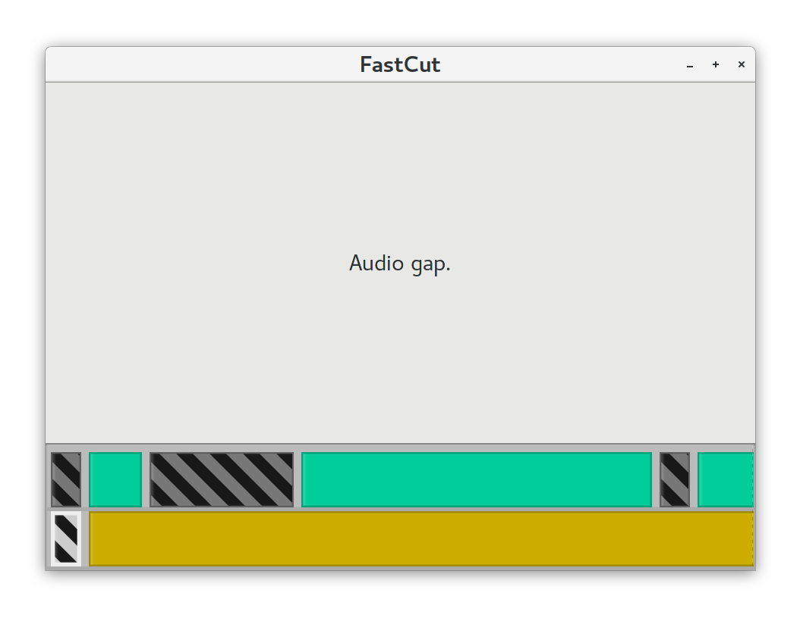
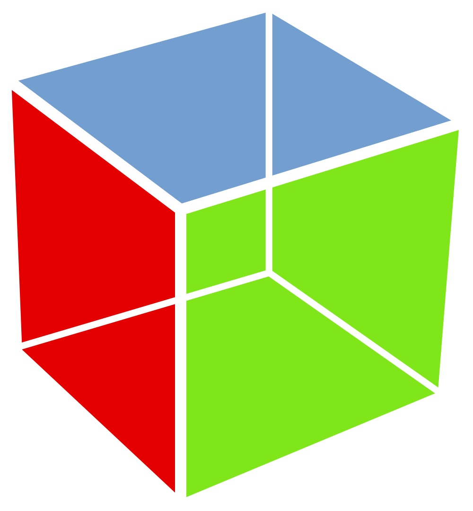

Oskar Wickström
September 2018
|
 |
|
 |
OverloadedLabels for methods, attributes, and signalsmain :: IO ()
main = do
_ <- Gtk.init Nothing
win <- new Gtk.Window [#title := "Hi there"]
#resize win 200 150
_ <- on win #destroy Gtk.mainQuit
button <- new Gtk.Button [#label := "Click me"]
_ <- on button
#clicked
(set button [#sensitive := False, #label := "Thanks for clicking me"])
#add win button
#showAll win
Gtk.main
editableNamesList :: IORef [Text] -> IO Gtk.Widget
editableNamesList namesRef = do
list <- new Gtk.ListBox []
initialNames <- readIORef namesRef
forM_ (zip initialNames [0 ..]) $ \(name, i) -> do
textEntry <- new Gtk.Entry [#text := name]
void . on textEntry #changed $ do
newName <- get textEntry #text
atomicModifyIORef' namesRef $ \oldNames ->
let newNames = oldNames & ix i .~ newName
in (newNames, ())
#add list textEntry
Gtk.toWidget list
main = do
... namesRef <- newIORef ["Alice", "Bob", "Carol"]
list <- editableNamesList namesRef
#add win list
editableNamesList :: [Text] -> IO (Gtk.Widget, Chan [Text])
editableNamesList initialNames = do
updates <- newChan
namesRef <- newIORef initialNames
list <- new Gtk.ListBox []
forM_ (zip initialNames [0 ..]) $ \(name, i) -> do
textEntry <- new Gtk.Entry [#text := name]
void . on textEntry #changed $ do
newName <- get textEntry #text
writeChan updates =<<
(atomicModifyIORef' namesRef $ \oldNames ->
let newNames = oldNames & ix i .~ newName
in (newNames, newNames))
#add list textEntry
widget <- Gtk.toWidget list
return (widget, updates)main = do
... (list, updates) <- editableNamesList ["Alice", "Bob", "Carol"]
void . forkIO . forever $ do
names <- readChan updates
print names
#add win list
IORefs, scattered state and logicgi-gtk
OverloadedLabels and type-level goodiesSingle widgets (without children) are constructed using widget:
widget Button []
widget CheckButton []
In GTK+, a bin can only contain a single child widget
bin ScrolledWindow [] $
widget Button []
ExpanderViewportSearchBarTo embed many widgets in a bin, use an in-between container
Some containers restrict the type of their children:
ListBox requires each child to be a ListBoxRow:
container ListBox [] $ do
bin ListBoxRow [] $ widget Button []
bin ListBoxRow [] $ widget Button []
Box requires each child to be a BoxChild:
container Box [] $ do
boxChild False False 0 $ widget Button []
boxChild True True 0 $ widget Button []
Widget attributes:
widget Button [#label := "Click Here"]
Bin attributes:
bin ScrolledWindow [ #hscrollbarPolicy := PolicyTypeAutomatic ] $
someSuperWideWidget
Container attributes:
container ListBox [ #selectionMode := SelectionModeMultiple ] $
children
Using on, you can emit events:
counterButton clickCount =
let msg = "I've been clicked "
<> Text.pack (show clickCount)
<> " times."
in widget
Button
[ #label := msg
, on #clicked ButtonClicked
]Some events need to be constructed in IO, to query widgets for attributes
onM -- very simplified
:: Gtk.SignalProxy widget
-> (widget -> IO event)
-> Attribute widget eventExample emitting events with chosen color:
colorButton color =
widget
ColorButton
[ #title := "Selected color"
, #rgba := color
, onM #colorSet (fmap ColorChanged . getColorButtonRgba)
]Functor instancesWe can map other events to our application’s event type:
data ButtonEvent = ButtonClicked
clickyButton :: Text -> Widget ButtonEvent
data MyEvent = Incr | Decr
incrDecrButtons :: Widget MyEvent
incrDecrButtons =
container Box [#orientation := OrientationHorizontal] $ do
boxChild True True 0 $ clickyButton "-1" $> Decr
boxChild True True 0 $ clickyButton "+1" $> IncrCSS classes are added using classes:
widget Button [classes ["big-button"], #label := "CLICK ME"]data App model event =
App
{ update :: model -> event -> (model, IO (Maybe event))
, view :: model -> Widget event
, inputs :: [Producer event IO ()]
}run
:: Typeable event
=> Text -- ^ Window title
-> Maybe (Int32, Int32) -- ^ Optional window size
-> App model event -- ^ Application
-> model -- ^ Initial model
-> IO ()main :: IO ()
main = do
_ <- Gtk.init Nothing
win <- new Gtk.Window [#title := "Hi there"]
#resize win 200 150
_ <- on win #destroy Gtk.mainQuit
button <- new Gtk.Button [#label := "Click me"]
_ <- on button
#clicked
(set button [#sensitive := False, #label := "Thanks for clicking me"])
#add win button
#showAll win
Gtk.main
data Model = NotClicked | Clicked
data Event = ButtonClicked
view' :: Model -> Widget Event
view' = \case
NotClicked ->
widget Button [#label := "Click me", on #clicked ButtonClicked]
Clicked ->
widget Button [#sensitive := False, #label := "Thanks for clicking me"]
update' :: Model -> Event -> (Model, IO (Maybe Event))
update' _ ButtonClicked = (Clicked, return Nothing)
main :: IO ()
main = run "Hi there" (Just (200, 150)) app NotClicked
where app = App {view = view', update = update', inputs = []}
editableNamesList initialNames = do
updates <- newChan
namesRef <- newIORef initialNames
list <- new Gtk.ListBox []
forM_ (zip initialNames [0 ..]) $ \(name, i) -> do
textEntry <- new Gtk.Entry [#text := name]
void . on textEntry #changed $ do
newName <- get textEntry #text
writeChan updates =<<
(atomicModifyIORef' namesRef $ \oldNames ->
let newNames = oldNames & ix i .~ newName
in (newNames, newNames))
#add list textEntry
widget <- Gtk.toWidget list
return (widget, updates)
data Model = Model [Text]
data Event = NameChanged Int Text
view' :: Model -> Widget Event
view' (Model names) =
container ListBox [] (zipWithM_ renderNameEntry names [0 ..])
where
renderNameEntry name i =
bin ListBoxRow [] $
widget Entry [ #text := name
, onM #changed (fmap (NameChanged i) . entryGetText)
]
update' :: Model -> Event -> (Model, IO (Maybe Event))
update' (Model names) (NameChanged i newName) =
( Model (names & ix i .~ newName)
, print newName $> Nothing
)
main :: IO ()
main = run "Editable Names"
(Just (640, 480))
app
(Model ["Alice", "Bob", "Carol"])
where app = App {view = view', update = update', inputs = []}
class Patchable widget where
create :: widget e -> IO Gtk.Widget
patch :: widget e1 -> widget e2 -> Patch
data Patch
= Modify (Gtk.Widget -> IO ())
| Replace (IO Gtk.Widget)
| KeepWidgets are wrapped in the dynamic Widget data structure:
data Widget event where
Widget
:: ( Typeable widget
, Patchable widget
, Functor widget
, EventSource widget
)
=> widget event
-> Widget eventSimilar to Data.Dynamic
instance Patchable Widget where
create (Widget w) = create w
patch (Widget (w1 :: t1 e1)) (Widget (w2 :: t2 e2)) =
case eqT @t1 @t2 of
Just Refl -> patch w1 w2
_ -> Replace (create w2)All smart constructors can return Widget values:
widget Button [] :: Widget event
bin ScrolledWindow [] _ :: Widget event
container ScrolledWindow [] _ :: Widget eventThey can also return specialized markup:
textRow :: Text -> MarkupOf (Bin ListBoxRow Widget) Event ()
textRow t =
bin ListBoxRow [] $
widget Label [ #label := t ]
myList :: Widget Event
myList =
container ListBox [] $
mapM textRow ["Foo", "Bar", "Baz"]gi-gtk-declarative let me build with pure functions:
timelineView :: Project -> Focus ft -> Widget (Event TimelineMode)
timelineView project focus =
container Box [#orientation := OrientationVertical] $ do
boxChild True True 0 $
renderPreviewPane (firstCompositionPart focus (project ^. timeline))
boxChild False False 0 $ container
ScrolledWindow
[ #hscrollbarPolicy := PolicyTypeAutomatic
, #vscrollbarPolicy := PolicyTypeNever
, classes ["timeline-container"]
]
(renderComposition (applyFocus (project ^. timeline) focus))Model -> Widgetgi-gtk-declarative
App.Simple